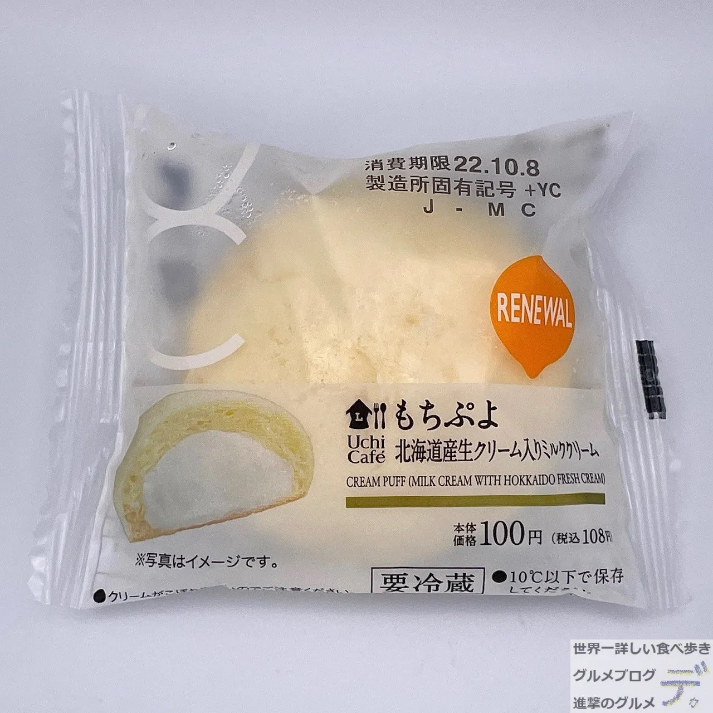
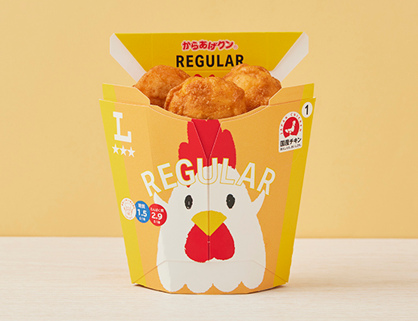
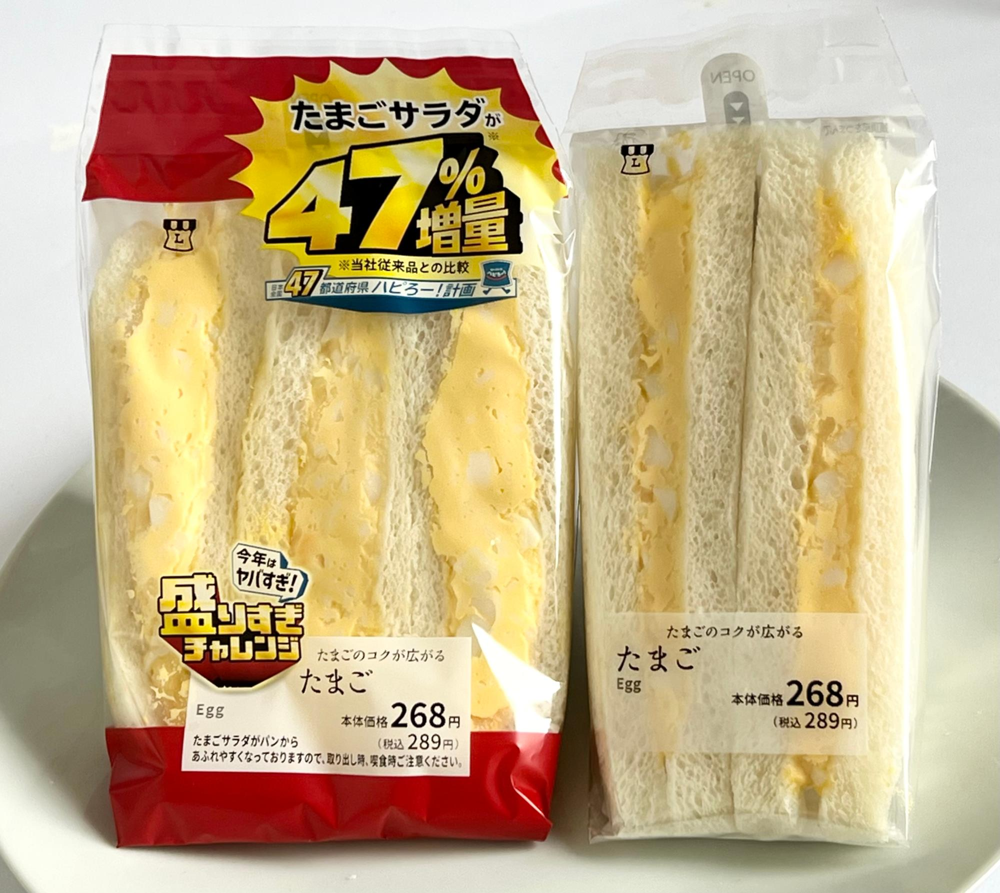
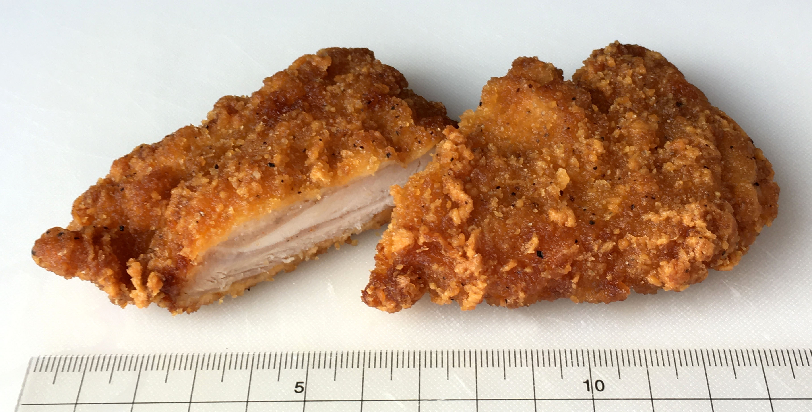
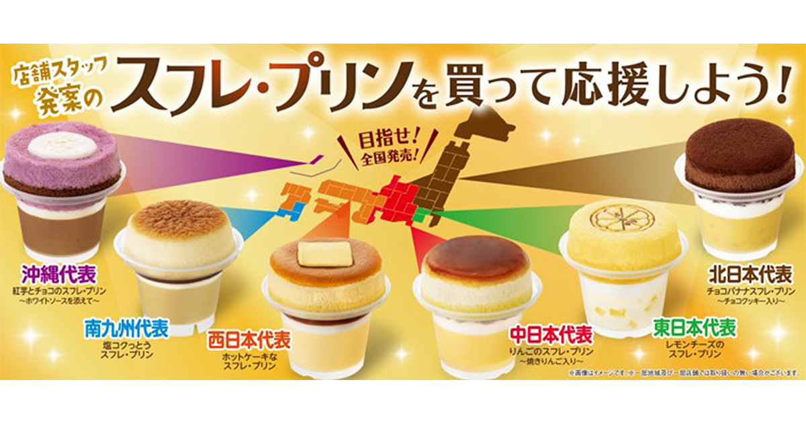
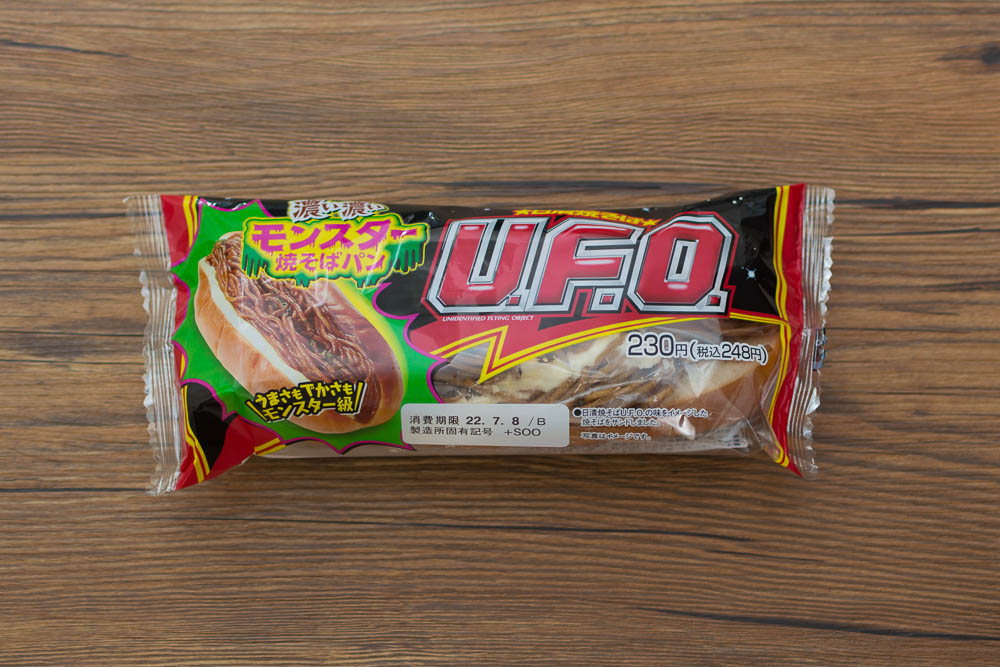
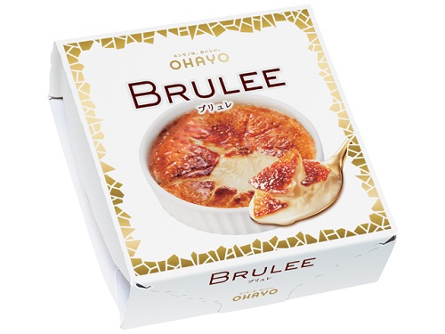
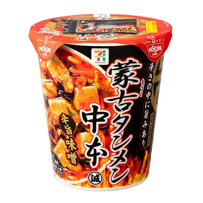
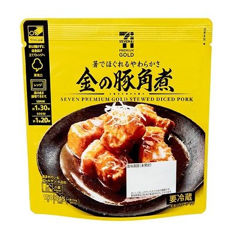
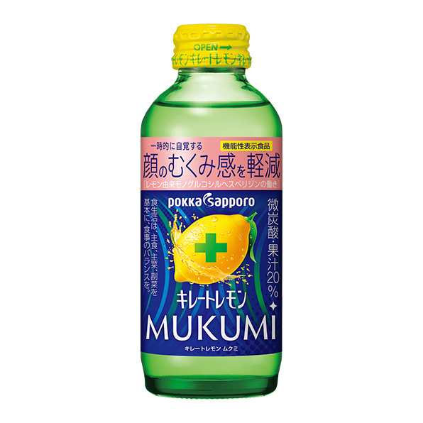

🏪 LAWSON (로손 개별 실물 제품군)
-
모찌뿌요 (Mochi Puyo)

쫀득한 찹쌀떡 식감의 반죽 속에 달달한 밀크 커스터드 생크림이 꽉 찬 인기 한입 디저트.
-
가라아게군 (Karage-kun)

빨간 닭 캐릭터 컵에 담긴 한입 크기 순살 닭튀김 (매콤한 레드맛 강추).
-
타마고 샌드위치 (계란 샌드)

부드러운 식빵 사이에 달콤 짭조름하고 고소한 으깬 계란 마요가 가득 찬 정통 샌드.
-
연어알 주먹밥 (이쿠라 오니기리)
간장에 살짝 절여 톡톡 터지는 고급 생연어알이 든 검정 김 오니기리.
-
과일 믹스 샌드위치
신선한 딸기, 복숭아 등 생과일과 부드러운 생크림이 조화를 이루는 디저트 샌드.
-
오코노미야키 & 야키소바 세트
오사카 대표 철판 요리 오코노미야키와 야키소바를 한번에 맛보는 가성비 도시락.
-
까르보나라 우동
크리미한 치즈 크림소스에 베이컨과 쫄깃하고 통통한 우동 면을 비벼 먹는 명물 간편식.
🏪 FamilyMart (패밀리마트 개별 실물 제품군)
-
파미치키 호네나시 (순살 파미치키)

노란/하얀 스프라이트 종이 봉투에 담아주는 패밀리마트 1위 순살 후라이드 치킨.
-
수플레 푸딩 (Souffle Pudding)

투명 컵 푸딩 위에 동그랗고 푹신한 수플레 치즈 케이크를 얹은 극상의 디저트.
-
야키소바 빵

부드러운 핫도그 번 빵 안에 짭조름한 소스에 볶은 야키소바 면을 듬뿍 채운 빵.
-
타마고 산도 (계란 샌드위치)
풍부하고 몽글몽글한 계란 소스를 가득 채워 우유와 같이 먹기 좋은 샌드위치.
🏪 Seven-Eleven (세븐일레븐 개별 실물 제품군)
-
크림 브륄레 아이스크림

바삭하고 쌉싸름하게 구운 설탕 토핑 아래에 진한 노란색 커스터드 아이스크림이 든 컵.
-
몽고탄멘 나카모토 (매운 컵라면)

강렬한 빨간색 포장의 중독성 강한 얼큰한 해장용 매운 마파두부풍 라멘 컵라면.
-
부타가쿠니 (삼겹 조림)

두툼한 삼겹살을 오랫동안 간장에 푹 졸여내어 젓가락으로 으깨지는 초호화 삼겹살 반찬/안주.
-
낫토 초밥 (낫토 호소마키)
초밥 밥과 김 안에 구수한 낫토를 돌돌 말아 하나씩 먹기 편하게 비닐 포장된 롤초밥.
-
반숙란 (아지츠케 타마고)
노른자가 촉촉하고 쫀득하게 삶아져 속까지 짭짤하게 양념 간이 잘 밴 고품격 온천 계란.
-
오뎅 (어묵 바)
사계절 카운터 옆 온수 오뎅 냄비에서 기호대로 골라 담는 일본 겨울 대표 오뎅바. (무, 곤약 강추)
🧪 여행을 편안하게 만드는 편의점 실물 꿀조합
-
💩 [쾌변 보장 조합] 파이브미니 + 곤약젤리
밀가루와 기름진 소고기 식사로 막힌 속을 상쾌하게 뚫어주는 식이섬유 탄산음료(파이브미니)와 곤약 젤리 조합입니다. 아침 공복에 드시면 가장 효과적입니다.
-
🔋 [피로 회복 조합] 무쿠미(붓기) 해소 음료 + 에너지 젤리

키レート레몬 MUKUMI
+
2만 보 이상 걷는 전신 피로와 다리 붓기(무쿠미) 완화를 돕는 꿀조합. 붓기 배출을 돕는 무쿠미 차류로 순환을 활발히 하고, 빠르게 흡수되어 에너지를 주는 포도당/타우린 젤리로 활력을 즉시 채웁니다.